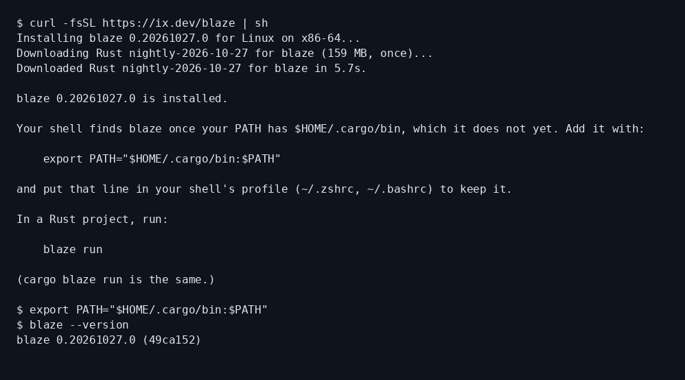
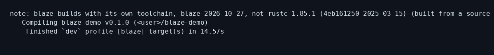
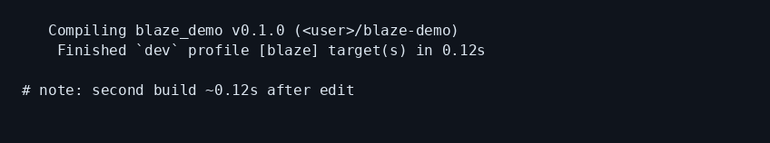
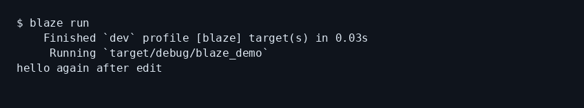
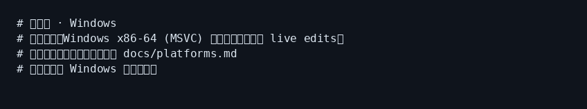

blaze 小白中文教程
社区非官方导读 · 上游 indexable-inc/blaze · ix.dev/blaze
完整图文教程在 GitHub README（安装、增量演示、Windows 说明、踩坑）：
30 秒安装
curl -fsSL https://ix.dev/blaze | sh export PATH="$HOME/.cargo/bin:$PATH" cd your-rust-project && blaze build && blaze run
本机 Linux 真实截图





记住三件事
- 主平台：Apple Silicon macOS + Linux；Windows 按官方 platforms.md
- 自带 toolchain、吃内存；最终以 cargo check / CI 为准
- 项目还年轻——有差异请开上游 Issue